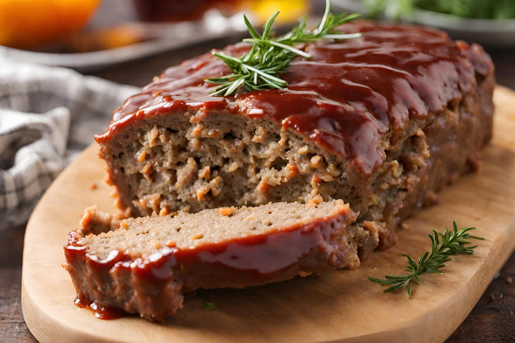

Home
Meat Loaf

Description:
Ground beef mixed with onion, Panko breadcrumbs, milk, fresh parsley, and seasonings produces an irresistibly tender and juicy meatloaf,
and this recipe has the best sweet and tangy glaze that caramelizes in the oven and adds amazing flavor to every bite.
Ingredients
Loaf
- 2 lbs ground beef, 85% or 80% lean*
- 1 med onion, (1 cup), finely chopped*
- 1 tsp olive oil
- 2 large eggs
- 3 Tbsp ketchup
- 3 Tbsp fresh parsley, finely chopped
- 1 tsp Italian seasoning
Loaf Sauce
- 3/4 cup ketchup
- 1 tsp white vinegar
- 2 Tbsp brown sugar
- 1/2 tsp garlic powder
- 1/2 tsp onion powder
Steps
- Line a rimmed baking sheet with parchment paper or foil for easier cleanup, and preheat oven to 350°F.
- Set a medium skillet over medium heat. Add 1 tsp oil and chopped onion and saute, stirring occasionally, until softened and golden, about 5-7 minutes. Transfer to a plate to cool.
- In a large bowl, add all of the meatloaf ingredients and mix just until well combined (your hands are your best tool for mixing – put on disposable gloves if you want to).
- Add meat to the pan and shape it into a meatloaf about 8 inches long, 4 inches wide, and 3 inches tall. Bake uncovered at 350˚F for 40 minutes.
- In a small bowl, add the sauce ingredients and stir to combine.
- Spread the sauce over the Meatloaf, then return to the oven and bake an additional 20 minutes or until the internal temperature is 160˚F on an instant-read thermometer. Rest the meatloaf for 10-15 minutes before serving and it will be much easier to slice.